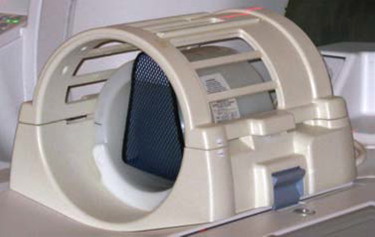

- 00000018WIA30F68F20GYZ
- id_131063963.0
- Feb 21, 2021 9:11:31 PM
System Gain Calibration
Prerequisites
| Required persons | Preliminary requirements | Procedure | Finalization |
|---|---|---|---|
| 1 | Not Applicable | Head and Body = 20 mins; Body = 10 mins; Head = 10 mins minutes | Head and Body = 2 mins; Body = 2 mins; Head = 2 mins minutes |
| Item | Quantity | Effectivity | Part number | Manufacturer |
|---|---|---|---|---|
| Head Sphere with Loader for 1.5T | 1 | - |
2125244 | - |
| Head Loader Positioner | 1 | - |
5110241 | - |
| Body Sphere | 1 | - |
46-265635G6 | - |
| Body Loader | 1 | - |
2135652-2 | - |
| ||||
| Condition | Reference | Effectivity |
|---|---|---|
|
No required conditions. | - | - |
About this task
System gain calibration is performed to determine the standard head (transmit/receive coil) and body recon scale factors that will achieve a known level of image intensity when using the standard head coil or body coil with a known phantom solution and protocol. The goal is that when the same solution or tissue is scanned in either the standard head or body coil with the same protocol, those tissues will have approximately the same image intensity level on a given system and between systems of like type.
This calibration accounts for differences in standard head and body receive coil sensitivity, preamp gains, cable loss, receiver gain, and other factors. The calibration must be done on standard head and body at least once to calibrate those paths. The procedure can calibrate both standard head and body together, only head, or only body. System gain calibration consists of:
-
Head and Body Calibration.
Note:Although these calibrations can not be run simultaneously, they can both be selected at the same time to run serially. Otherwise, run individual modes as listed in the next two options.
-
Body Calibration.
-
Head Calibration.
Preliminary Setup
Procedure
- Position the head sphere in the head loader and fasten the strap.
Position the head loader on top of the head loader positioner in the
head coil so the loader's black center line lies directly below the
head coil's superior/inferior center marker.
Figure 1. Position Head Sphere in Head Loader 
Figure 2. Landmark head sphere 
1 Black line on loader 2 S/I center line on coil
Head and Body Calibration
Procedure
- The calibration results show on the screen. If adjustments are
required, the system asks, Do you want to save the recon
scale factor? Click Yes to save
the recon scale factor.Note:
There are (at least) two prompts: one for head and one for body.
Figure 8. Calibration Output 
Body Calibration
Procedure
- Note:Select Body, and then click START. Calibration begins. (See Figure 7.)
The system is dependent on landmarking the head coil, even for body mode only scans.
- When the test is complete, the calibration results show on the screen. If adjustments are required, the system asks, Do you want to save the BODY recon scale factor? Click Yes to save the calibration file. (See Figure 8.)
- Click QUIT to exit the tool. The calibration is complete.
Head Calibration
Procedure
- Select Head, and then click START. Calibration begins. (See Figure 7.)
- When the test is complete, the calibration results show on the screen. If adjustments are required, the system asks, Do you want to save the HEAD recon scale factor? Click Yes to save the calibration file. (See Figure 8.)
- Click QUIT to exit the tool. The calibration is complete.
Finalization
Procedure
- Remove all phantoms and service tools from the patient table.
- If you are performing this calibration during an installation, continue with the required calibrations. Otherwise, perform a SaveInfo to save the new ReconScale values.